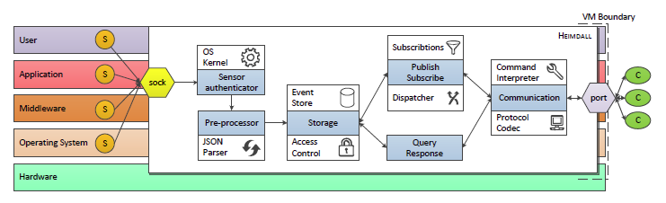

What is ngmon
Ngmon is operating system daemon used as a producer of structured monitoring data (application logs, measurements) in virtualized computing environments. Schema-based structured monitoring data represent fundamental requirement for advanced real-time processing (e.g. pattern and causality detection) of huge amounts of such data.
This is extremely important especially in large-scale distributed infrastructure monitoring context. The goal of this project is to implement new functionality in respective daemon's components (event collector, access control component, long-term storage, publish/subscribe subsystem, communication protocol) in order to improve security and general usability.
Architecture

For more details about ngmon's goals and principles please review paper presented at SYNASC2012 conference (currently being published). Note, that old codename for ngmon is Heimdall.
Who are we?
ngmon is currently developed as a part of research activities of (Lab of Software Architectures and Information Systems), Faculty of Informatics Masaryk University.